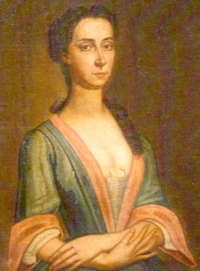

Margarita Bennewe Crannel
Spelled (Beniot) and referred to variously, Margarita Bennewe was christened at the Albany Dutch church in August 1702. She was the daughter of Pierre and Hendrickie Van Schoonhoven Bennewe. Her father was of French and/or Huguenot origins. She grew up in a mid-sized family living in Albany and/or the surrounding area. A number of her siblings became Albany County residents.
In June 1726, she married English ancestry Manhattan native William W. Crannel at the Albany Dutch church. By 1739, she had given birth to at least eight children - half of whom were christened in Albany. She last served as a baptism sponsor in Albany in 1758.
This Crannel family probably lived in the first ward or just outside of the city stockade. Aside from church information, these Crannels made the only the lightest impression on the community landscape.
Margarita Bennewe Crannel lost her husband in January 1757. She may have died in October 1758. We seek more definitive information on her adult life and passing.
Portrait identified as "Margarita Bennoit," the wife of William Winslow Crannell. Found online (on July 4, 2012) via www.ancestry.com without additional explanation except for the note stating it appears in "Crannells in America." That posting used different/known birth and death dates.